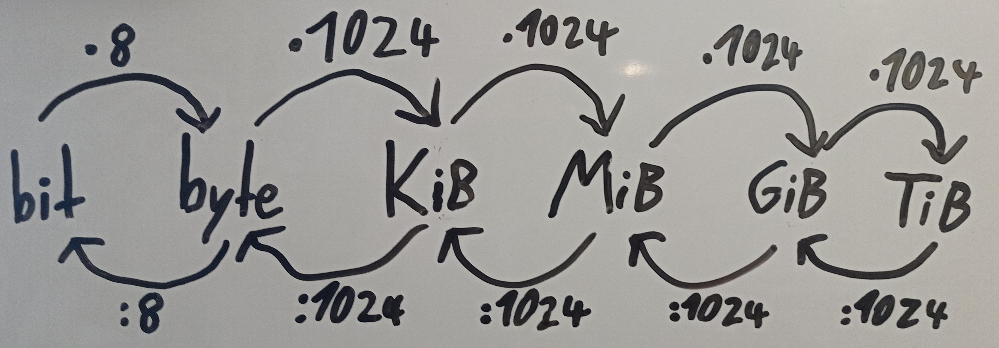
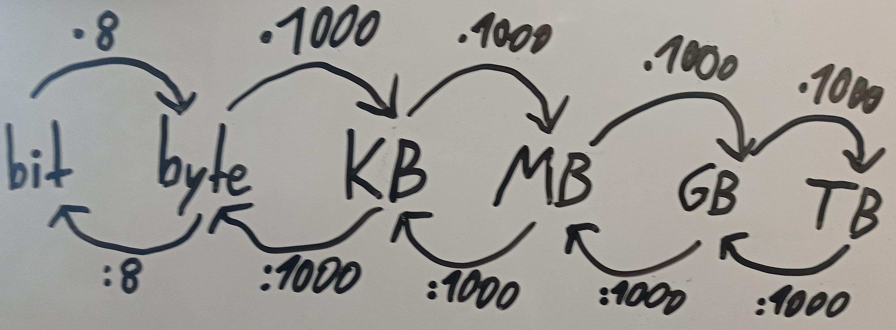
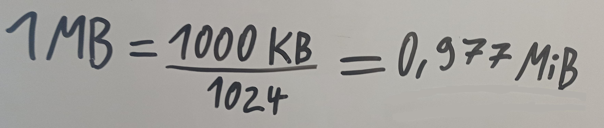

BytesOfProgress
Wiki
Data Volumes
1000 or 1024?
MB / MiB will be used as the example here.
Mebibyte (MiB) and Megabyte (MB) both measure digital storage, but there is a key difference. MiB, using binary math, is always exactly 1,048,576 bytes. MB, using decimal math, can be either 1 000 000 bytes or 1 048 576 bytes / 10^6 bytes or 2^20 bytes, depending on context. So, while MB can vary, MiB stays consistent.
While in the International System of Units (SI), 1 Megabyte equals exactly 1,000,000 bytes, in computing, it commonly refers to 2^20 bytes.
To avoid confusion, especially in technical contexts, it is recommended to use the binary prefixes (Kibibyte, Mebibyte, Gibibyte, etc.) rather than Kilobyte, Megabyte, Gigabyte etc. when referring to digital storage capacities.
Conversion
Factor 1024 / binary prefix:
Factor 1000 / decimal prefix:
Conversion between prefixes
MiB ---> MB:

MB ---> MiB:
back